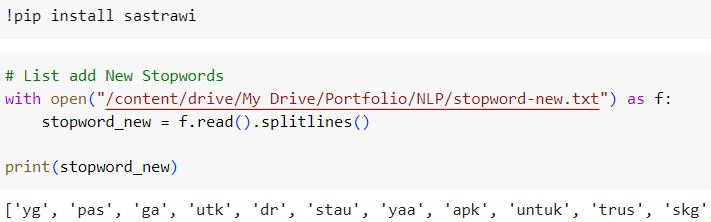
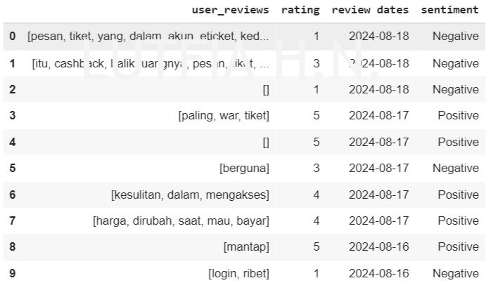
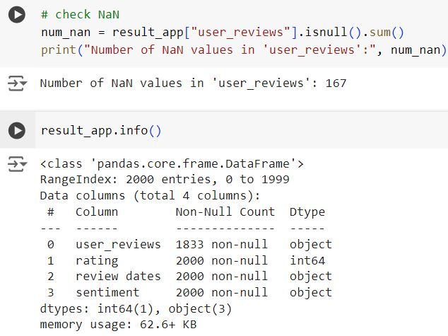
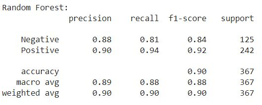
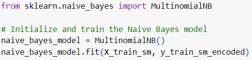

Sentiment Analysis of Tiket.com User Reviews Using a Machine Learning Approach
Sentiment analysis is a technique used to identify emotions in unstructured text data, utilizing approaches from Natural Language Processing (NLP).
In the digital age, customers can easily share their opinions with a wide audience through online platforms. The objective of this project is to analyze
user reviews to gain insights into customer satisfaction and complaints by identifying positive and negative sentiments towards the various services offered by Tiket.com.
Tiket.com is an online travel agency application in Indonesia, used for booking flights, hotels, trains, car rentals, events, and more. By understanding these sentiments as a key component for evaluation in pinpointing areas of improvement
and performance measurement of the system, the business can provide actionable insights that can enhance user experience and inform strategic decisions for the business, ultimately increasing customer loyalty.
In this project, the data used consists of 2,000 newest reviews in Indonesian, collected from the Tiket.com application on Google Play Store. The challenges posed by informal language, such as slang words, abbreviations, and spelling errors,
can be addressed through various data preprocessing techniques and the application of machine learning models to achieve accurate sentiment classification.
1. Data Collection
The first step involves data collection using the scraping technique on Google Play Store through the Google-Play-Scraper API in Python using Google Colab. The goal is to automatically retrieve data from the newest user reviews of the Tiket.com app.
This process begins with the installation of the necessary packages, followed by web scraping techniques to collect 2000 datasets. The collected datasets will then be stored in CSV files for further analysis.
In addition of storing the data, it is crucial to ensure that the reviews are accurately captured, including metadata such as the review date, rating, and user comments. This information will be valuable for subsequent stages of the analysis.
Install the Google Play Scraper package using !pip command and import the necessary packages.
Determine the application ID from the Google Play Store website to retrieve review data.
Use the lang and country parameters to retrieve reviews from Indonesia in Indonesian language.
Use the sort and count parameter to retrieve only the newest 2.000 reviews.
The image above displays information from user reviews scraped from the Google Play Store, including column names, data types, the number of entries, and a total of 11 columns.
2. Data Exploration
The next stage involves conducting data exploration to understand the results obtained from scraping the Google Play Store. The analysis will focus on the content column (user_reviews), the score column (ratings), and the at column (review dates).
Sentiment analysis will then be performed, categorizing ratings of 1-3 as negative sentiment and ratings of 4-5 as positive sentiment. To display the data in a dataframe, import the Pandas library.
The data to be processed covers the period from December 24, 2023, to August 18, 2024, based on user reviews and ratings. This includes ratings from 1 to 5, with 488 users giving a rating of 1, 69 users giving a rating of 2, 67 users giving a rating of 3,
85 users giving a rating of 4, and 1,291 users giving a rating of 5.
Labeling
The recapitulation results based on ratings indicate two categories: positive and negative. A rating of 4 to 5 represents very satisfied feedback in the positive category, while a rating of 1 to 3 represents dissatisfied feedback in the negative category. It is observed that the rating of 1 occurs most frequently,
with 1.376 instances, while the total number of negative ratings amounts to 624.
3. Preprocessing Data
At this stage, the raw data will be processed into a suitable format for further analysis, involving several steps. These steps include case folding to standardize text case, spelling correction to fix misspelled words, filtering (adding new stopwords and stopword removal) to remove unimportant words,
tokenization to separate words, and stemming to stemming to remove affixes or reduce words to their base forms.
Case Folding
To standardize textual data, such as converting all characters to lowercase and removing unnecessary elements based on the text's condition, use Regular Expressions (regex) from the 're' library. The following steps are applied for case folding:
Remove all numbers: 're.sub(r"\d+", " ", ...)'
Remove all emoticons: 're.sub(r"[^\w\s,]", " ", ...)'
Remove leading and trailing whitespace (including spaces, tabs, and newlines): '.strip()'
Replace one or more whitespace characters with a single space: 're.sub("\s+", " ", ...)'
Remove all punctuation: 're.sub(r'[^\w\s]', '', ...)'
Replace newlines with a space: 're.sub("\n", " ", ...)'
Convert all characters to lowercase: '.lower()'
In this process, the user_reviews column is referenced to apply all the predefined case folding functions.
Spelling Correction
To enhance the quality of textual data and achieve high accuracy, it is essential to correct spelling errors. This step is crucial for maintaining data consistency, particularly when analyzing user reviews on the Tiket.com application.
The word_correct function is designed to correct spelling errors or replace specific words in user reviews from the user_reviews column, based on a correction list located in the correction-word.txt directory. This file contains pairs of words, where the first word represents the incorrect spelling or term,
and the second word is the correct replacement, with each pair separated by a colon (:).
Tokenization
The process of separating text into individual words, characters, or subwords using the NLTK library, which supports multiple languages.
By splitting text into tokens, it becomes easier for algorithms or models to process the text further, resulting in more structured analysis and enabling the model to understand and process information more effectively.
This code converts each review in the user_reviews column, originally consisting of entire sentences or paragraphs, into a list of individual words using the word_tokenize function from the NLTK library.
Filtering (Stopword Removal and Addition)
Stopwords are used to remove less important words that typically appear in large quantities, allowing the analysis to focus on more meaningful terms. The NLTK and Sastrawi libraries provide predefined stopword lists for processing the Indonesian language. However,
the default stopwords provided by these libraries may not be sufficient, so additional stopwords can be added to the list to further clean the data.

The add_stopword function removes custom stopwords specified in the stopword-new.txt file and applies them to the user_reviews column.
The code prepares a comprehensive list of Indonesian stopwords by combining stopwords from the NLTK and Sastrawi libraries. The clean_stopword function then uses this combined list to remove stopwords from a given list of tokens (words).
This process is essential for cleaning text data, allowing for more meaningful analysis by filtering out common, non-informative words.
Stemming
This process uses the Indonesian language to reduce words to their base forms, thereby facilitating analysis and the retrieval of relevant information. The library utilized for stemming is Sastrawi, which is specifically designed to address the complexities of Indonesian grammar,
including prefixes, suffixes, and infixes that modify the meaning of words.
This code uses the Sastrawi stemmer to stem the words in the user_reviews column. The factory.create_stemmer() function creates a stemmer object that performs the stemming process on Indonesian text. The clean_stem function is then used to retrieve a list of tokenized words and combine them into a single string.
Handling Missing values
Handling missing values, particularly represented as NaN, is an important step in data preprocessing. Including rows with missing values can lead to misleading results or incorrect conclusions and disrupt the word cloud analysis. Removing missing values allows for a more focused sentiment analysis.
The generated word cloud will be based on reviews with available text, which aids in understanding the context of the reviews and the sentiment of user feedback.
This code checks for and removes any rows with missing values (NaN) in the 'user_reviews' column, and then resets the DataFrame index to maintain a clean and organized structure. The isnull().sum() function is used to count and determine the number of NaN values, resulting in a total of 167 NaN values out of 2,000 data entries.
The dropna(subset=['user_reviews']) function is utilized to remove rows that contain NaN values, and the reset_index(drop=True, inplace=True) function is used to reset the DataFrame index.
4. Data Visualization
After completing data preprocessing, the next step is to utilize data visualization techniques to gain insights. These visualizations aid in identifying trends, patterns, and distributions within the data. In sentiment analysis, word clouds are particularly useful for highlighting terms most
frequently associated with positive or negative sentiments in user reviews. By focusing on the most prominent words, word clouds can quickly convey the key topics and sentiments expressed by users, effectively communicating insights to stakeholders and enabling more informed decision-making based on user feedback.
The integrated libraries Matplotlib and WordCloud assist in creating detailed, informative, and visually engaging representations of sentiment analysis results.
Words such as "tiket", "pesan", "harga", and "hotel" frequently appear in negative reviews. These terms often highlight problems related to ticketing, communication issues, dissatisfaction with pricing, or complaints about accommodation. In positive reviews, words like "bagus", "bantu", "mantap", and "mudah" are commonly used. These terms reflect positive feedback,
appreciation for assistance, high satisfaction, and ease of use or convenience
4. Data Splitting
A technique used in machine learning to split a dataset into separate subsets, data splitting involves allocating part of the data to train the model and reserving the rest to evaluate the model's performance.
Splitting the data from the columns 'sentiment' and 'user_reviews', which contain 1833 entries, into training and testing sets. With a test_size of 0.2, 20% of the data is allocated for testing, while 80% is reserved for training.
5. Feature Engineering
At this stage, feature engineering involves transforming raw data into numerical formats through vectorization methods such as TF-IDF, which measures the importance of words in a document, assigning higher weights to unique words within
the document collection. Additionally, this stage includes applying techniques to address class imbalance, ensuring that the model performs reliably across all classes. These steps are essential for preparing the data in a way that enhances the accuracy and generalization of machine learning models.
Vectorization (TF-IDF)
This code is used to transform text data from the training and testing sets into numerical features using TF-IDF by importing the TfidfVectorizer class from the sklearn.feature_extraction.text module. The TF-IDF method highlights the importance of words relative to their frequency across the entire dataset, enabling the model to focus on more relevant features.
Handling Class Imbalance
This code uses the SMOTE technique to oversample the minority class in the training data, thereby balancing the class distribution. The SMOTE class from the imblearn library is imported and applied to resample the training features and labels.
6. Model Evaluation
Machine learning classification is a subset of supervised learning that involves modeling problems where the model is trained on labeled data to predict class labels for new or unseen data based on learned patterns. For example, in this project, the classification task involves categorizing user reviews
as either 'negative' or 'positive' sentiments. This approach enables the model to
differentiate between sentiment classes and apply this knowledge to new inputs.
Several models can be used for sentiment analysis, depending on the complexity of the task, the nature of the data, and the desired accuracy. Here is a list of commonly used models for sentiment analysis:
Random Forest
SVM (Support Vector Machine)
Logistic Regression
Naive Bayes
K-Nearest Neighbor (KNN)
Decision Tree
Random Forest

SVM (Support Vector Machine)
Logistic Regression
Naive Bayes

K-Nearest Neighbor (KNN)
Decision Tree
7. Conclusions
The results of this project involve using 2,000 raw data obtained from web scraping Google Play Store reviews for the Tiket.com app.
The process of cleaning the data to be suitable for modeling included steps such as spelling correction, case folding, tokenization, filtering stopword removal,
stemming, and handling missing values. After cleaning, 1,833 data were available. To analyze word frequency in the cleaned data, both word cloud visualizations and bar charts were utilized,
distinguishing between positive and negative sentiments. The final stage involved a classification task, using machine learning algorithms to classify sentiment labels as either negative
or positive. The training data consisted of 1,466 samples, and the comparative results of various machine learning models are presented in the figure below.